1440px
Inventory at the reviewed viewport
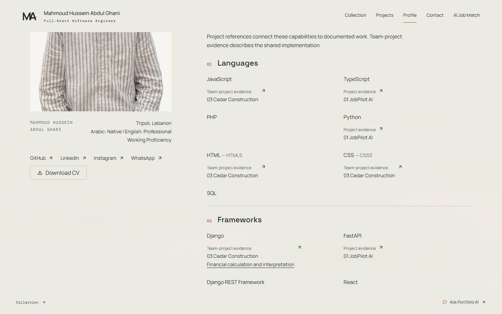

Engineering rows and additional references
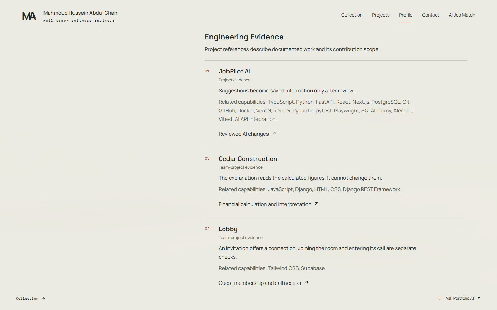
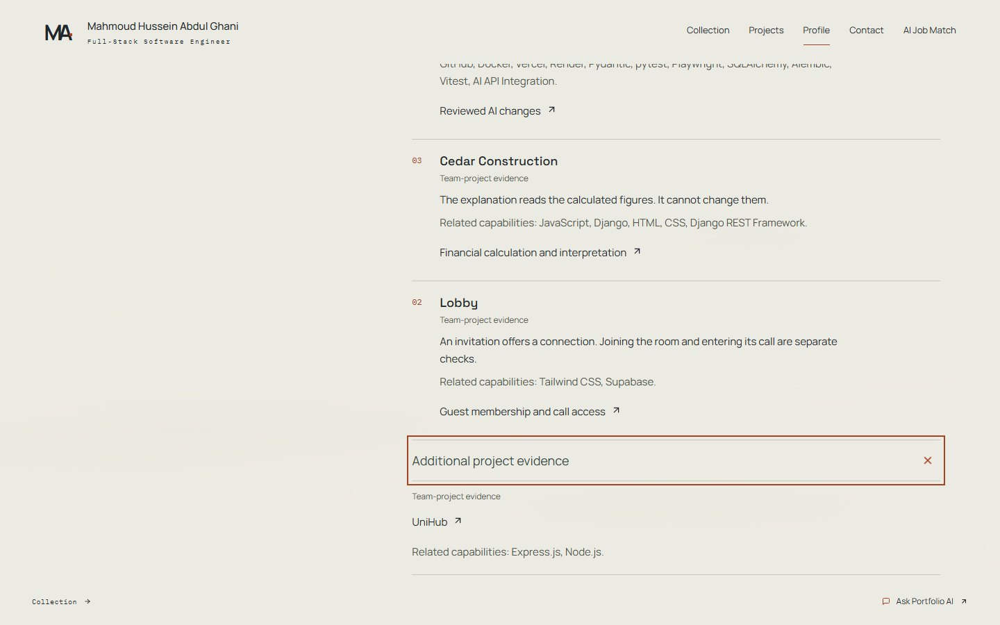
Complete before/after and reduced-motion review
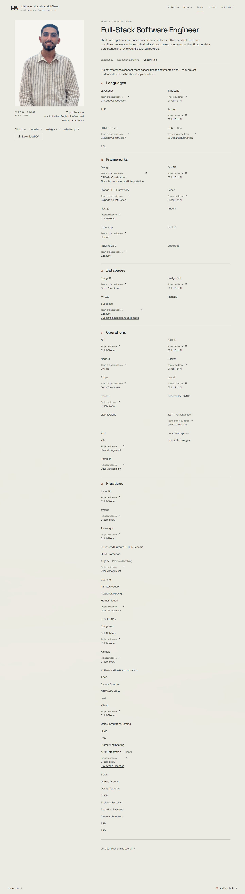

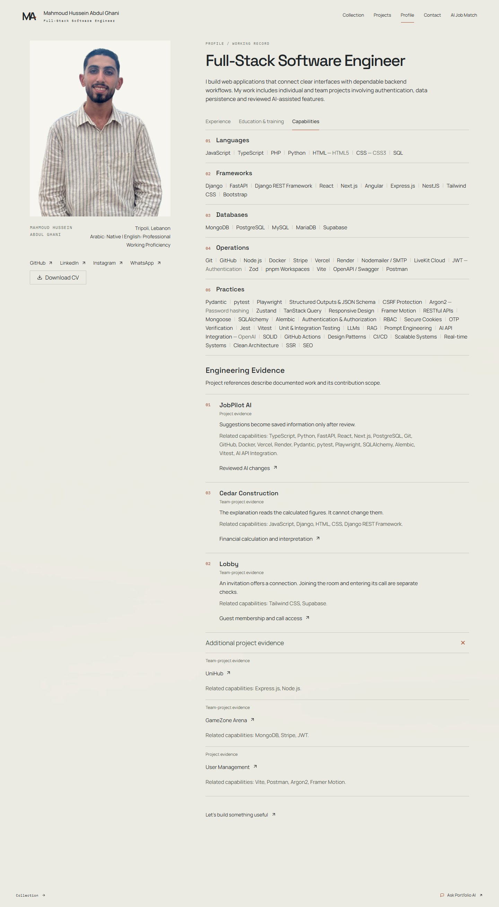
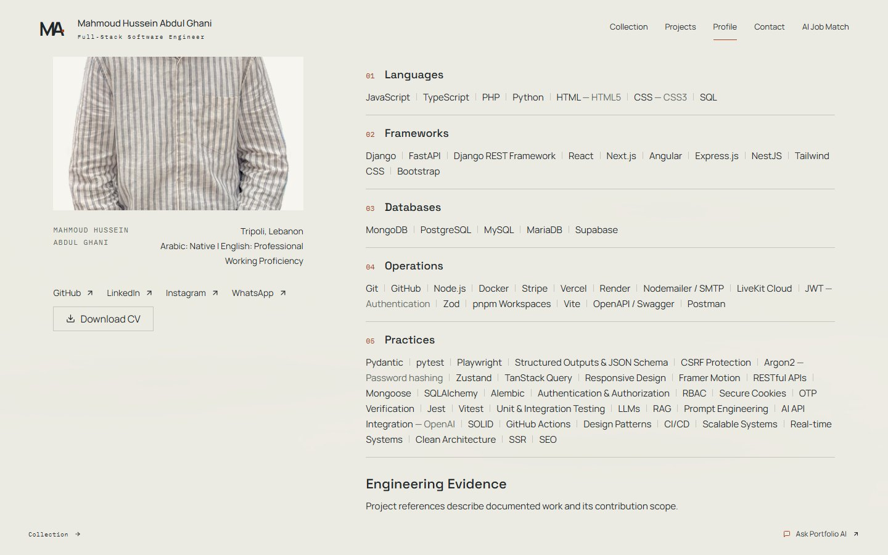

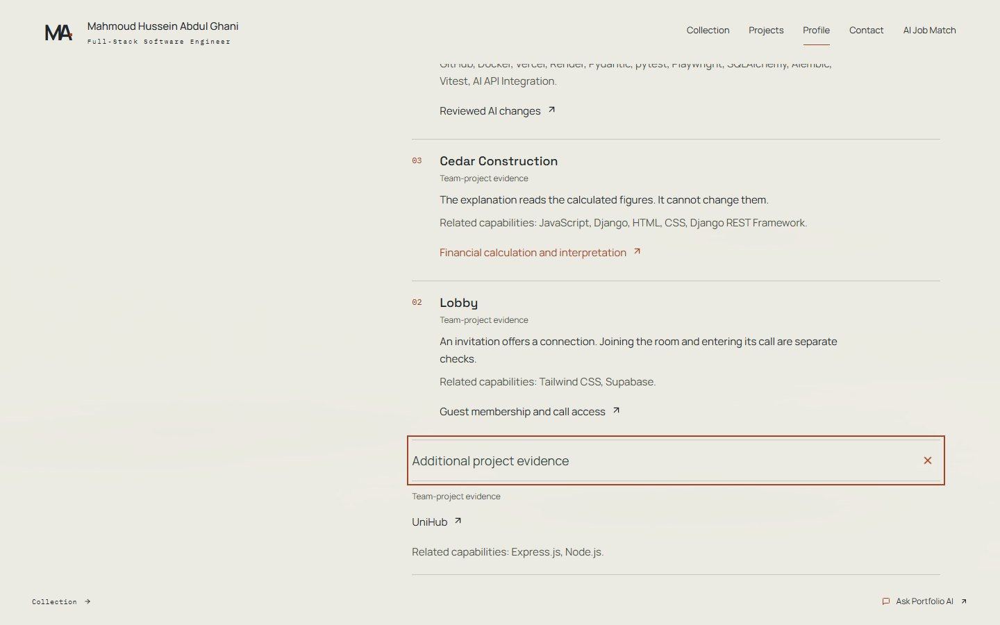
Baseline 983c8b7. All 71 distinct competencies and all six original project destinations remain. The five categories use wrapping text lists; project evidence appears once per destination.
Measurements and integrity checks · Decoded image inventory · Changed files · Design QA, source basis and gaps
Windows Chrome with current public GET records and the original portrait. Phone/tablet sizes and reduced motion are browser emulation, not physical-device tests. Complete captures extend camera height to expose the entire inner scrolling record.
| Width | Before | After / expanded | Evidence links |
|---|---|---|---|
| 1440px | 4525px | 1508px / 1921px | 34 → 6 |
| 768px | 5791px | 1858px / 2271px | 34 → 6 |
| 390px | 5791px | 2033px / 2471px | 34 → 6 |
| 320px | 5816px | 2333px / 2796px | 34 → 6 |







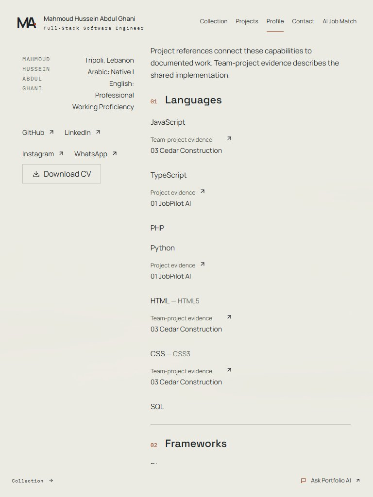
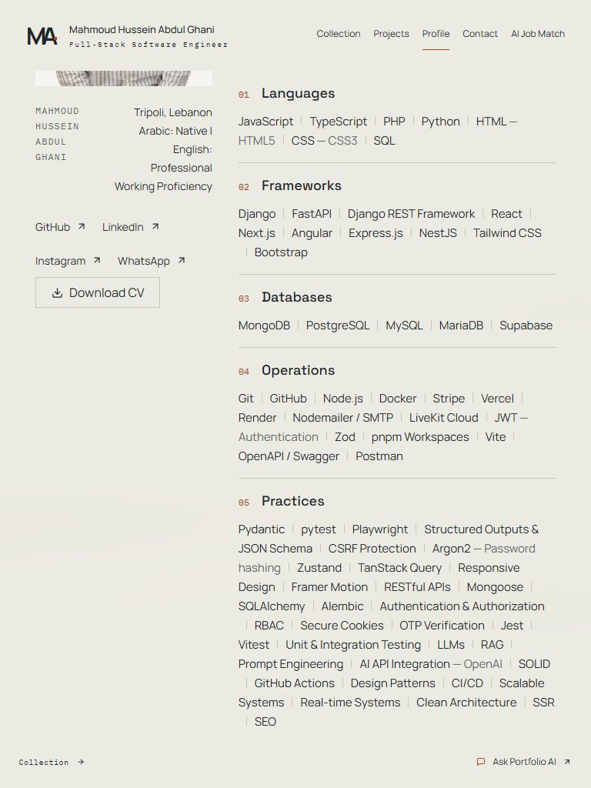
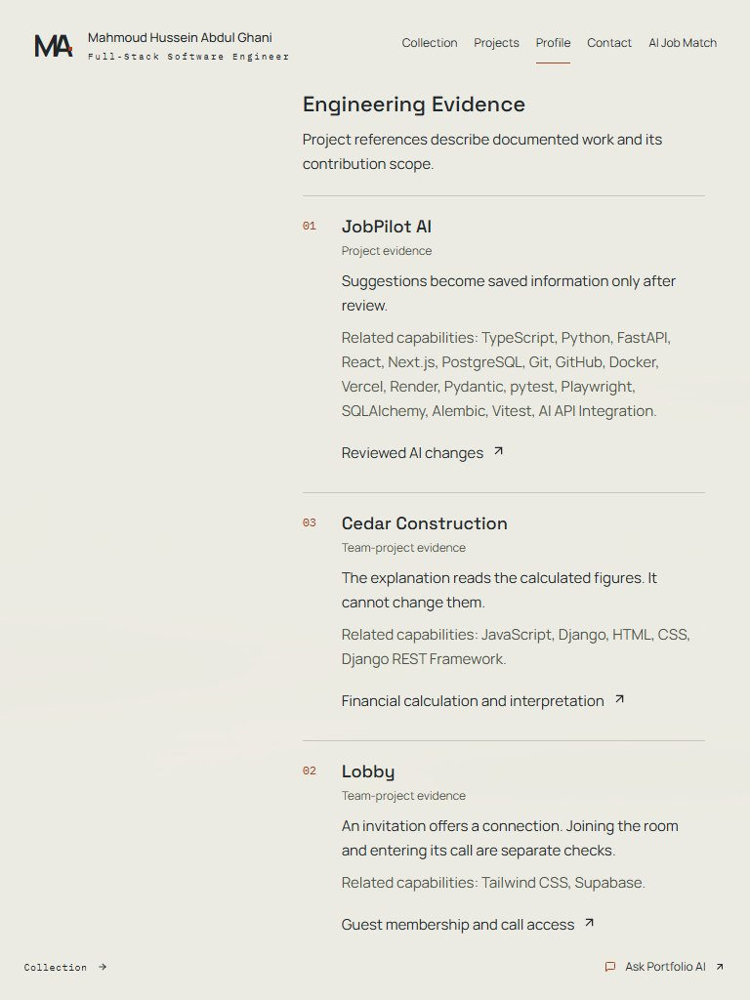

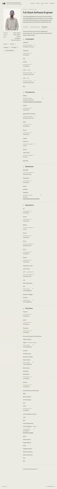
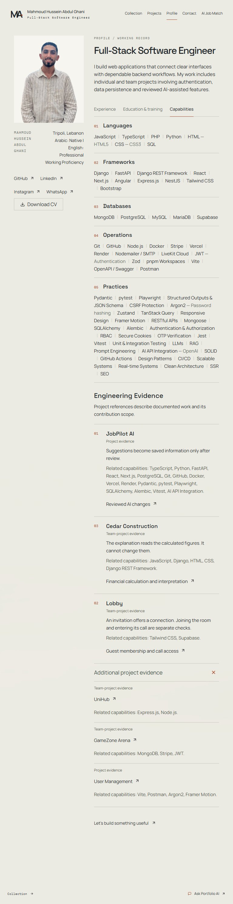


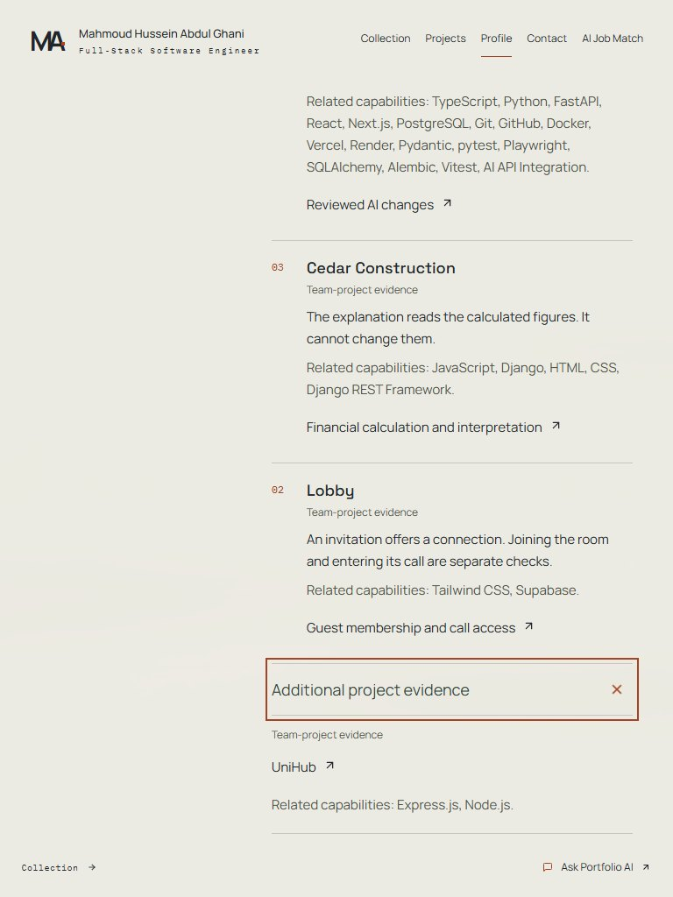
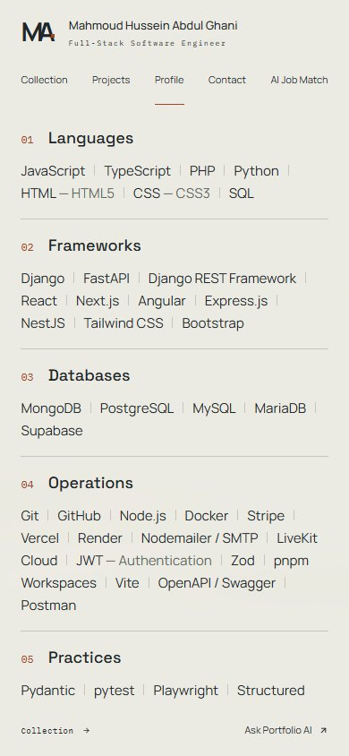
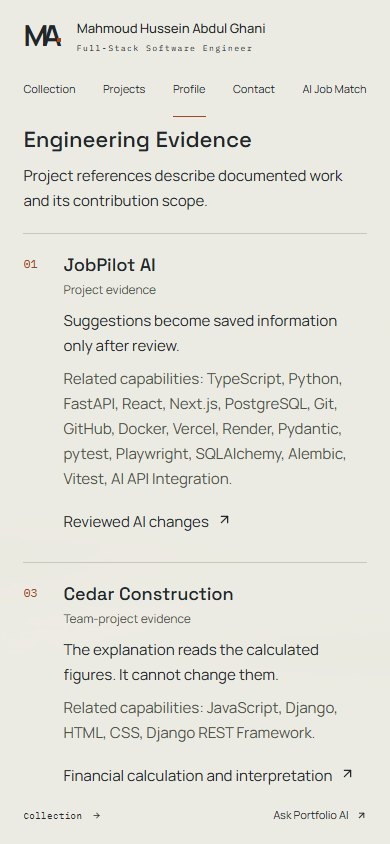

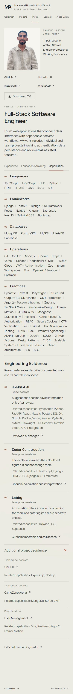


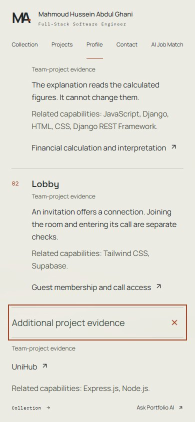
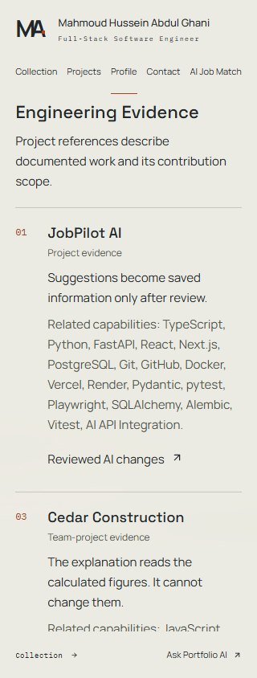